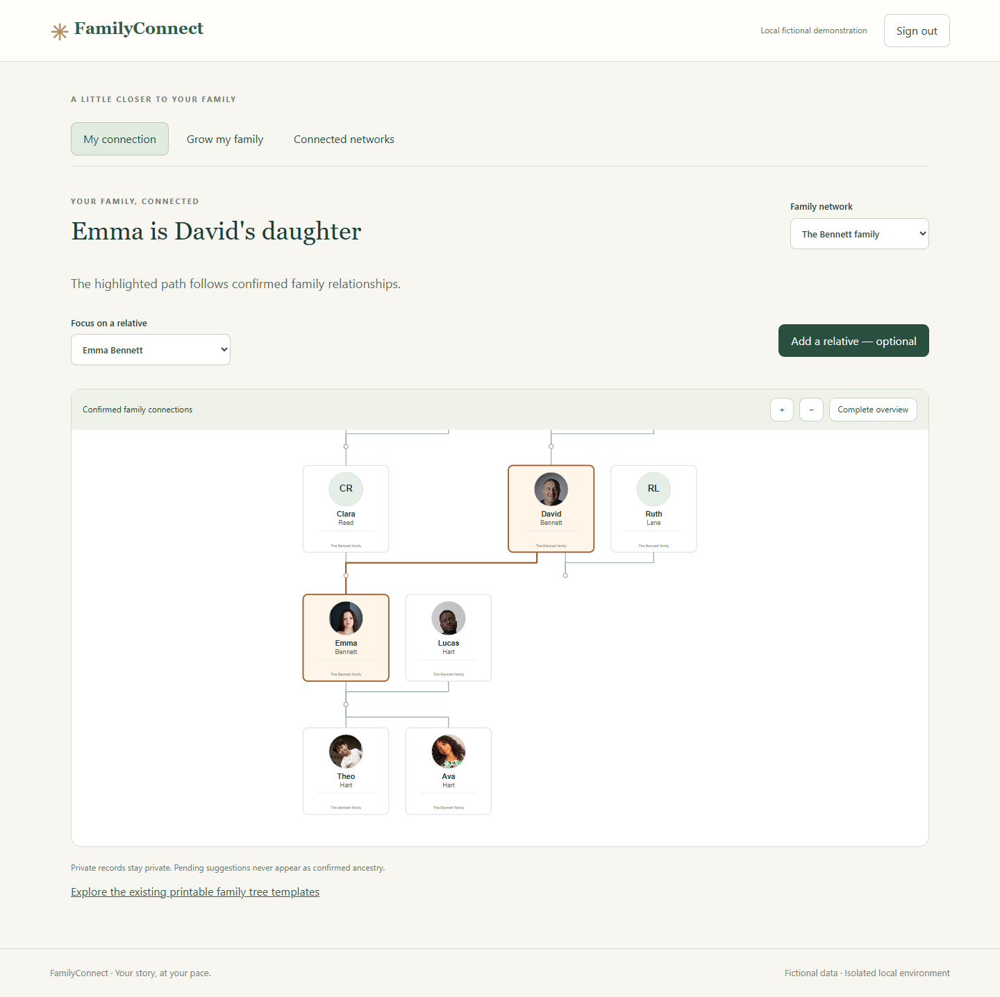
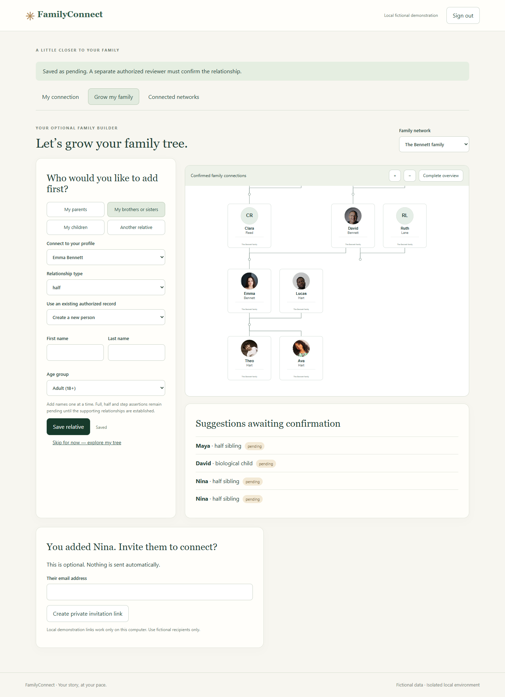
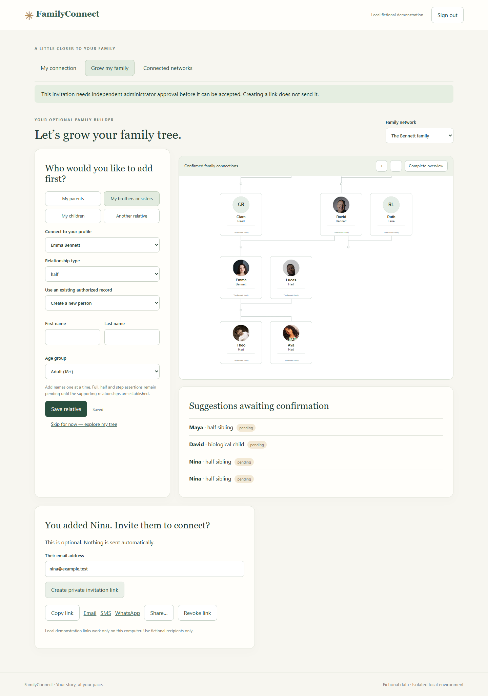
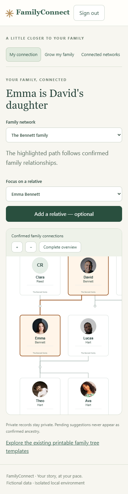
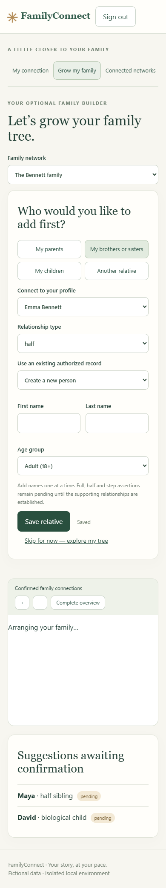
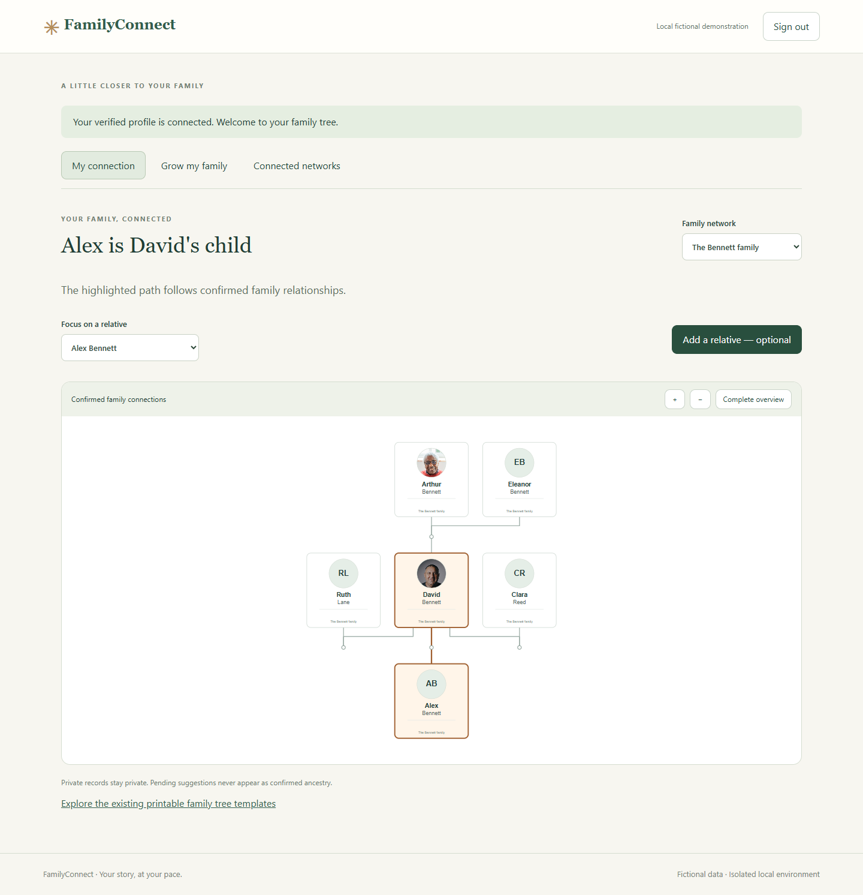
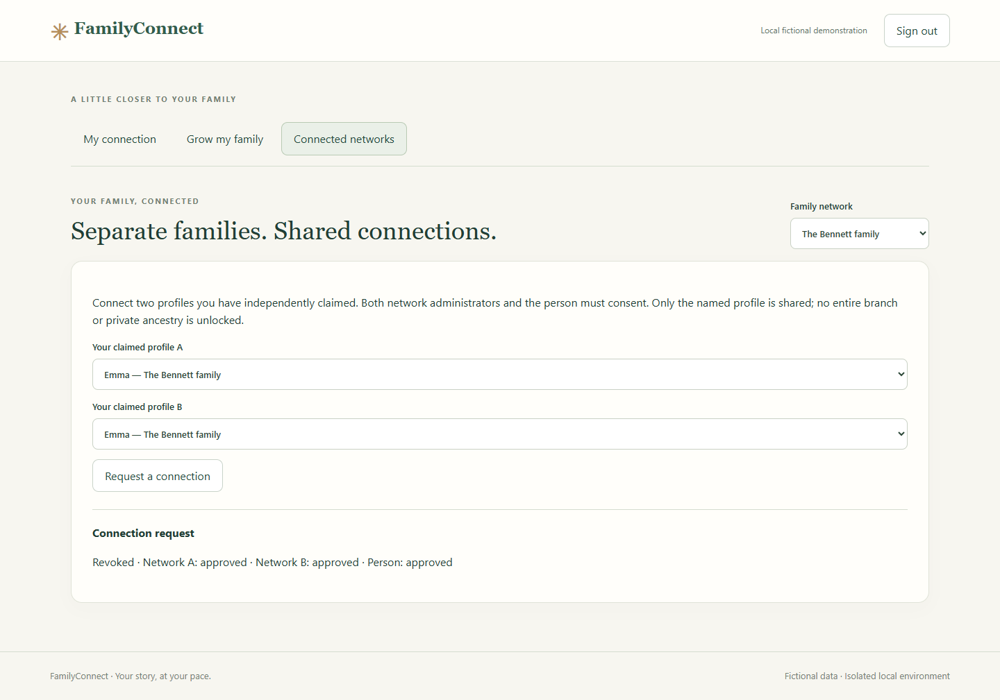

The isolated Docker/Supabase demonstration is running. The hosted project and its two existing Auth accounts were not accessed or modified during implementation. No public deployment or real-family invitations occurred. Stop here for visual and workflow review before any hosted migration or Phase 7.
FamilyConnect local application · Local Supabase Studio · Local verification-email inbox
Use emma@example.test with password Fictional-Phase6-Only!42. These are fictional local-only credentials. Emma has already completed the invitation journey and can return directly to her confirmed family connection. Try Grow my family, add a relative, reload to verify saved progress, and explore Connected networks.
Other fictional roles use the same local password: david@example.test (Bennett administrator), maya@example.test (Reed administrator), reviewer@example.test (independent reviewer). Reviewers must independently verify identity/guardianship before approving; the UI records an attestation, not an external identity-verification service.
The seeded invitation links are single-use and were consumed during testing. Run npm run test:phase6:first-time for a fresh complete signup/verification/claim demonstration with a newly generated fictional recipient. Newly created adult invitations remain unusable until independent administrator approval. No delivery occurs automatically.
Five new migrations live only in local/phase6/supabase/migrations/. The old repository migrations were not applied. The normalized familyconnect schema separates networks/memberships, people/account links, guardians, typed parentage/partnerships, proposals, claims, invitations, progress, connections, receipts and audit records. RLS is enabled on every application table, direct client writes are revoked, and mutation functions validate the authenticated caller and explicit permissions. Private schema objects are not directly exposed through PostgREST.
Invitation tokens use 32 cryptographically random bytes and SHA-256 hashes at rest; raw tokens are excluded from audit/receipt records. New invitations require an independent authorized reviewer. The accepting user's confirmed email must match the invitation; profile ownership is atomic and limited to one claimed identity per account per network. Guardianship is distinct from identity ownership and is never inferred automatically from parentage.
The browser client refuses any backend except localhost/127.0.0.1 on port 55321. The setup helper refuses a linked local workspace or unexpected API URL. Vite uses a separate Phase 6 environment prefix, entry point and build output. The existing hosted .env is not used by this entry. All local seeds use example.test accounts and fictional family data.
| Suite | Result and evidence |
|---|---|
| Database/security | 29 passed: anonymous isolation, RLS/grants, escalation rejection, independent claims, wrong-email/replay/concurrent consumption, minor privacy, guardian approval/revocation, duplicate identity rejection, provisional/confirmed separation, autosave and idempotency. Results |
| Consent and additional security | 12 passed: both network approvals plus person consent required, scoped sharing, revocation, expired/revoked invitations, ancestry-cycle rejection and email-confirmation configuration. Results |
| Phase 6 browser journey | Passed invitation/sign-in/claim/reveal, path highlighting, draft reload, optional builder, voluntary link creation, zoom/overview, mobile overflow and runtime-error checks. Initial journey |
| Actual first-time signup | Passed new account creation → local email verification → claim → reveal. Last measured run: 2.34 seconds total; 2.29 seconds excluding measured local email wait. This is automated execution, not proof of a 60–90 second human completion target. Timing/results |
| First-time mobile signup | Passed the complete signup/email-verification/claim/reveal journey at 390 × 844. Measured 1.74 seconds total, 1.68 seconds excluding local email wait; automated timing only. Results · Screenshot |
| Final visual/browser checks | Passed updated builder preview, voluntary link approval notice and isolated template entry. Corrected mobile view also checks that Emma's card is horizontally visible. Results |
| Local database-to-graph checks | 3 passed: fixture partnership types/former status preserved, authorized graph validates, and the existing relationship engine returns the correct parent-child description. Results |
| Existing engine/geometry regression | 53 passed, including 25/100/300-person relationships, automatic geometry, duplicate/cycle detection and premium compositions. |
| Existing browser regression | 11 passed, including search/zoom/pan, branches, highlighting, worker cancellation, portraits and SVG/PDF/PNG exports. |
| Premium template regression | 5 passed, including 11/15/25/40-person compositions, export generation, portrait fallback and template switching. |
| Build | Phase 6 production build passed. It remains local; nothing was published. |
Security suites exercise real local PostgreSQL/Supabase, not mocked authorization. Some integration suites consume their fixture invitations and mutate fictional records. The repeatable database suite generates a new fictional test identity; invitation rate limits still apply. Do not point any test helper at hosted Supabase.
Captured with Playwright in installed Chrome and inspected as images. Visual inspection identified and corrected mobile focus clipping, blank-date labels and network-specific return restoration. Final builder captures wait for the automatic layout and autosave to finish. Click an image for full resolution.







The application currently runs on port 5176. If restarting later, from the repository:
supabase start --workdir local/phase6 supabase migration up --local --workdir local/phase6 npm run seed:phase6 npm run dev:phase6
Docker Desktop must be running. Optional local analytics is disabled after a Windows logging-container restart conflict; core Auth, database, API, Studio and local mail services are running. No Docker daemon TCP exposure was enabled. The seed helper writes only the local public API key into Git-ignored .env.phase6.local; privileged local credentials are kept out of browser code.
npm run test:phase6 npm run test:phase6:first-time npm run test:family npm run test:family:browser npm run test:family:premium npm run build:phase6
The existing hosted security findings remain unresolved because hosted changes are prohibited. No claim of production readiness, hosted backup/restore validation, or public deployment is made. Review this local implementation and visual evidence before any further phase.